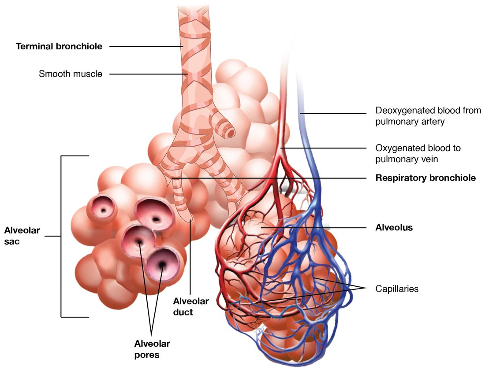

Respiratory disorders
Lung disorders break ventilation, diffusion, the matching of air to blood, or control.
Part 1 · Clinical hook
Why this matters
Mr. Novak, 66, smoked for 45 years. He gets breathless on the stairs, coughs up mucus every morning, and breathes out through pursed lips. His spirometry shows he can force out only half his vital capacity in the first second, and a drug that opens the airways barely changes that. His alveolar walls are being digested, and his small airways are collapsing every time he breathes out.
Part 2 · Foundations
What this builds on
Part 3 · Prerequisite check
Quick check before you start
1. In obstructive lung disease, what happens to FEV1 ÷ FVC?
- It falls
- It rises
- It stays the same
Show the answer
Obstruction slows the flow of air out, so FEV1, the volume forced out in the first second, falls much more than the total forced vital capacity. The ratio falls, typically below 0.70.
- Correct: It falls:
- It rises:
- It stays the same:
2. Which change makes fluid leave capillaries faster and collect as edema?
- A fall in capillary hydrostatic pressure
- A rise in blood colloid osmotic pressure
- A rise in capillary hydrostatic pressure
Show the answer
Higher hydrostatic pressure inside the capillary pushes more fluid out. When filtration outpaces lymph drainage, fluid collects in the tissue: edema.
- A fall in capillary hydrostatic pressure:
- A rise in blood colloid osmotic pressure:
- Correct: A rise in capillary hydrostatic pressure:
3. In left-sided heart failure, where does blood back up first?
- The systemic veins and the legs
- The pulmonary veins and the lungs
- The coronary arteries
Show the answer
The left ventricle receives blood from the lungs through the left atrium. When it fails to pump it out, pressure rises in the left atrium, the pulmonary veins and the pulmonary capillaries.
- The systemic veins and the legs:
- Correct: The pulmonary veins and the lungs:
- The coronary arteries:
Part 4 · Anatomy panel
Anatomy

With labels hidden, select a box to reveal its label.
Part 5 · Causal chain
How it works, step by step
- Years of cigarette smoke keep neutrophils and macrophages active in the lungs.They release protein-digesting enzymes, and smoke inactivates alpha-1 antitrypsin, which normally blocks them.
- The enzymes break down elastic fibers faster than they are repaired.Alveolar walls and their capillaries are destroyed, and small alveoli merge into large air spaces (emphysema).
- The lost walls no longer pull the small airways open or recoil during expiration.The small airways collapse when the person breathes out, air is trapped, and residual volume rises while FEV1 falls.
- Some alveoli are poorly ventilated but still perfused, and the diffusion surface has shrunk.Arterial PO2 falls, and in severe disease PCO2 rises; widespread hypoxic pulmonary vasoconstriction raises pulmonary artery pressure.
- The right ventricle pumps against a high pulmonary pressure for years.It thickens and eventually fails (cor pulmonale), and long-term hypoxemia raises erythropoietin and the red blood cell count.
Part 6 · Core concept
Core concepts
Part 7 · Misconception
A common mistake
The wrong idea: People with COPD should not be given oxygen, because it removes their hypoxic drive and they stop breathing.
What actually happens: A hypoxic person with COPD needs oxygen. Given in large amounts, oxygen can raise PCO2 in some people with severe COPD, but mainly because it releases hypoxic pulmonary vasoconstriction, worsening ventilation–perfusion mismatch, and because of the Haldane effect, not because their breathing stops. The answer is controlled oxygen to a target saturation, often 88–92%, with close monitoring. Oxygen is never withheld from a hypoxic patient.
Part 8 · Retrieval check
Check yourself
Anything you miss goes into your review queue.
1. After albuterol, a patient's FVC is 4.0 L and her FEV1 is 2.4 L. What is her FEV1 ÷ FVC, and what does it show?
- 1.67: restrictive disease
- 0.60: airflow obstruction
- 0.60: normal for her age and size
- 0.85: airflow obstruction
Show the answer
FEV1 ÷ FVC = 2.4 ÷ 4.0 = 0.60. That is below 0.70 after the airway-opening drug, so she has persistent airflow obstruction.
- 1.67: restrictive disease: 1.67 comes from dividing FVC by FEV1, the wrong way round. FEV1 can never be larger than FVC, so the ratio is always below 1.
- Correct: 0.60: airflow obstruction: Correct. 0.60 is below the 0.70 cutoff.
- 0.60: normal for her age and size: The ratio is right, but 0.60 is below 0.70, so it is not normal.
- 0.85: airflow obstruction: 0.85 does not follow from these numbers, and a ratio that high would not show obstruction.
2. Emphysema destroys many alveolar walls in a man's lungs. Predict the change in each variable, compared with healthy lungs.
| Variable | Change |
|---|---|
| Surface area for gas exchange | — |
| Elastic recoil of the lungs | — |
| Lung compliance | — |
| Residual volume | — |
| FEV1 | — |
Show the answer
Destroying alveolar walls removes surface area and elastic fibers. Weaker recoil and loss of the outward pull on small airways make them collapse during expiration, so air is trapped, residual volume rises and FEV1 falls. The lungs become more compliant, not stiffer.
- Surface area for gas exchange: down. Small alveoli merge into fewer, larger spaces, which have much less wall area, and the capillaries in the lost walls are gone.
- Elastic recoil of the lungs: down. Protein-digesting enzymes have broken down the elastic fibers.
- Lung compliance: up. With less elastic tissue to stretch, the lungs inflate more easily for a given pressure change.
- Residual volume: up. Without elastic support, small airways collapse during expiration and trap air behind them.
- FEV1: down. Collapsing airways and weak recoil slow the flow of air out during a forced breath.
3. Two patients each have FEV1 ÷ FVC of 0.55. After inhaling albuterol, Ms. Rao's ratio rises to 0.80; Mr. Dunn's rises only to 0.58. Which pairing is most likely?
- Ms. Rao has emphysema; Mr. Dunn has asthma
- Both have pulmonary edema
- Ms. Rao has asthma; Mr. Dunn has COPD
- Both have restrictive disease
Show the answer
Asthma's obstruction comes largely from smooth muscle contraction, which albuterol relaxes through beta-2 receptor proteins, so the ratio returns toward normal. COPD's obstruction persists after the drug: collapsed airways and thickened, mucus-filled walls do not reverse.
- Ms. Rao has emphysema; Mr. Dunn has asthma: This reverses the pattern. Emphysema's obstruction barely changes with albuterol; asthma's improves a lot.
- Both have pulmonary edema: Pulmonary edema does not usually produce a low ratio that corrects with albuterol; it mainly stiffens the lungs and floods alveoli.
- Correct: Ms. Rao has asthma; Mr. Dunn has COPD: Correct. Reversible obstruction fits asthma; persistent obstruction fits COPD.
- Both have restrictive disease: Restrictive disease lowers volumes but keeps the ratio normal or high. Both ratios here are low.
4. A paramedic finds Mr. Chen, who has severe COPD, breathless with an SpO2 of 80%. What is the best-supported approach to oxygen?
- Withhold oxygen, because it will remove his hypoxic drive and stop his breathing
- Give only room air until his PCO2 is measured
- Give maximal oxygen and aim for 100% saturation
- Give oxygen to a target of about 88–92% and watch his breathing
Show the answer
He is dangerously hypoxic and needs oxygen. Because large amounts can raise PCO2 in some people with severe COPD, mainly by worsening ventilation–perfusion mismatch and through the Haldane effect, oxygen is adjusted to a target saturation, often 88–92%, while his breathing and alertness are watched.
- Withhold oxygen, because it will remove his hypoxic drive and stop his breathing: Oxygen is never withheld from a hypoxic patient. The hypoxic-drive explanation that many exams still teach plays at most a small part in the rise in PCO2.
- Give only room air until his PCO2 is measured: Delaying oxygen leaves him severely hypoxic, which is far more dangerous than a controlled rise in PCO2.
- Give maximal oxygen and aim for 100% saturation: Aiming for 100% can release hypoxic pulmonary vasoconstriction throughout his lungs and, with the Haldane effect, raise his PCO2. A lower target avoids this while correcting the hypoxemia.
- Correct: Give oxygen to a target of about 88–92% and watch his breathing: Correct. Controlled oxygen to a target range treats the hypoxemia safely.
5. Mrs. Ito has severe left-sided heart failure and wakes up gasping, with crackles in both lungs. What mainly drives fluid into her lungs?
- A leak in the respiratory membrane caused by infection
- Low blood colloid osmotic pressure from liver failure
- Blocked lymphatic vessels in the lungs
- Raised hydrostatic pressure in her pulmonary capillaries
Show the answer
Her weak left ventricle cannot pump out all the blood reaching it. Pressure rises in the left atrium, the pulmonary veins and the pulmonary capillaries. Filtration then outpaces lymph drainage, and fluid collects first around the alveoli and then inside them: cardiogenic pulmonary edema.
- A leak in the respiratory membrane caused by infection: A leaky membrane causes noncardiogenic pulmonary edema, as in sepsis or pneumonia. Her edema follows from heart failure.
- Low blood colloid osmotic pressure from liver failure: Low colloid osmotic pressure adds to edema in some patients, but nothing here points to liver failure, and her heart failure explains it.
- Blocked lymphatic vessels in the lungs: Lung lymphatics are working hard, not blocked. They are overwhelmed by the extra filtration.
- Correct: Raised hydrostatic pressure in her pulmonary capillaries: Correct. High capillary pressure pushes fluid out: cardiogenic pulmonary edema.
6. Mr. Osei has pneumonia filling his right lower lobe. On high-flow oxygen, his SpO2 rises only from 86% to 90%. Why does oxygen help so little?
- Blood past the filled alveoli never meets the extra oxygen
- Bacteria in the lung consume the extra oxygen
- High-flow oxygen blocks the respiratory centers
- His hemoglobin has lost its ability to bind oxygen
Show the answer
The consolidated alveoli are full of inflammatory fluid, so blood flowing past them gets no air at all. Extra oxygen reaches only the healthy alveoli, and the blood there was already about 97% saturated, so it can carry little more. When the two streams mix, the unoxygenated blood still pulls the average down.
- Correct: Blood past the filled alveoli never meets the extra oxygen: Correct. Blood that bypasses air cannot be helped by more oxygen in the air.
- Bacteria in the lung consume the extra oxygen: Bacteria use a trivial amount of oxygen compared with the oxygen passing through the lungs.
- High-flow oxygen blocks the respiratory centers: Oxygen does not block the respiratory centers.
- His hemoglobin has lost its ability to bind oxygen: Pneumonia does not change hemoglobin. Blood that reaches ventilated alveoli still loads oxygen normally.
7. Put the steps in order to show how tuberculosis infection develops and can later become active.
- A person breathes in tiny airborne droplets carrying the bacteria
- Alveolar macrophages engulf the bacteria
- The bacteria survive and multiply inside the macrophages
- T cells activate the macrophages and a granuloma walls off the infection
- The bacteria stay dormant for years as latent infection
- Immunity weakens and the bacteria break out as active disease
Show the answer
Tuberculosis is airborne. Alveolar macrophages take up the bacteria, which survive inside them. Weeks later, T cells activate the macrophages, and a granuloma contains the infection, often for life. If immunity later weakens, the dormant bacteria can reactivate.
- Correct order: 1. A person breathes in tiny airborne droplets carrying the bacteria 2. Alveolar macrophages engulf the bacteria 3. The bacteria survive and multiply inside the macrophages 4. T cells activate the macrophages and a granuloma walls off the infection 5. The bacteria stay dormant for years as latent infection 6. Immunity weakens and the bacteria break out as active disease
Part 9 · Summary
Summary
Lung disorders break ventilation, diffusion, the matching of air to blood, or control. COPD is persistent airflow obstruction (FEV1 ÷ FVC below 0.70 after a drug that opens the airways), mainly from smoking. In emphysema, protein-digesting enzymes destroy alveolar walls: surface area and elastic recoil are lost, small airways collapse on expiration, air is trapped and compliance rises. In chronic bronchitis, inflamed airways make excess mucus and clear it poorly. Asthma, by contrast, is episodic and largely reversible. COPD causes ventilation–perfusion mismatch, hypoxemia, later carbon dioxide retention, pulmonary hypertension with cor pulmonale, and polycythemia. Oxygen is given to a target saturation and never withheld. Pulmonary edema is fluid in the lung tissue and alveoli, from high pulmonary capillary pressure (left-sided heart failure) or a leaky membrane (sepsis, pneumonia, toxins); it thickens the membrane, stiffens the lungs and floods alveoli. Pneumonia fills alveoli with inflammatory fluid, so blood passes them without meeting air. Tuberculosis is an airborne bacterium that survives in alveolar macrophages and is walled off in granulomas; latent infection can reactivate when immunity weakens.
Part 10 · Up next
What comes next
Part 11 · Connections